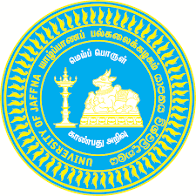

UNIVERSITY OF JAFFNA

HISTORY OF UNIVERSITY OF JAFFNA
- 1974: Established as the Jaffna Campus of the University of Sri Lanka.
- 1978: Elevated to an autonomous university status as the University of Jaffna.
- 1999: Expanded its operations by establishing the Vavuniya Campus (now University of Vavuniya).
AVAILABLE FACULTIES
- Faculty of Arts – මානවශාස්ත්ර හා සාමාජීය විද්යා පීඨය
- Faculty of Science – විද්යා පීඨය
- Faculty of Medicine – වෛද්ය පීඨය
- Faculty of Agriculture – කෘෂිකර්ම පීඨය
- Faculty of Management Studies & Commerce – කළමනාකරණ අධ්යයන හා වාණිජ පීඨය
- Faculty of Engineering – ඉංජිනේරු පීඨය
- Faculty of Technology – තාක්ෂණ පීඨය
- Faculty of Hindu Studies – හින්දු අධ්යයන පීඨය
- Faculty of Allied Health Sciences – සෞඛ්ය විද්යා පීඨය
- Faculty of Graduate Studies – පශ්චාත් උපාධි අධ්යයන පීඨය
GO TO OFFICIAL WEBSITE OF UNIVERSITY OF JAFFNA
GO TO HOME PAGE